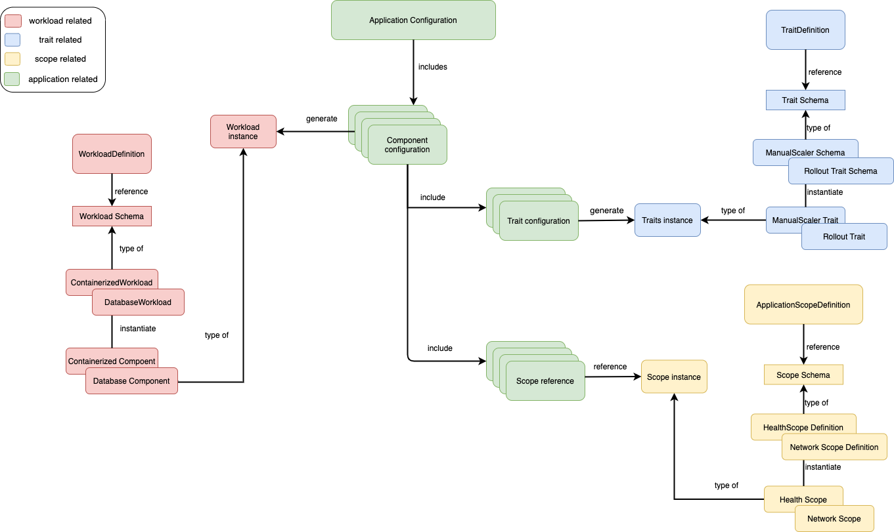
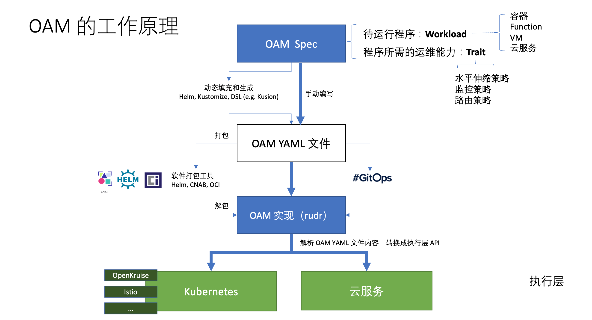

OAM（开放应用模型）
OAM（Open Application Model）是阿里巴巴和微软共同开源的云原生应用规范模型，同时开源了基于 OAM 的实现 Rudr，自 2019 年 10 月宣布开源以来截止本文发稿已经有快半年时间了。
当前可能大部分人才刚刚开始了解 OAM，所以这篇文章将从最基础出发，为大家介绍 OAM 的诞生背景和要解决的问题，以及它在云原生生态中的作用。
Takeaways
如果你没有兴趣或者时间阅读下面的全文，那么建议阅读下面这些核心观点：
- OAM 的本质是根据软件设计的“兴趣点分离”原则对负责的 DevOps 流程的高度抽象和封装，这背后还是“康威定律”在起作用。
- OAM 仅定义云原生应用的规范，目前推出的 Rudr 可以看做是 OAM 规范的 Kubernetes 解释器，将云原生应用定义翻译成 Kubernetes 的资源对象。
- OAM 与 Crossplane 将展开合作，就 Kubernetes 式以 API 为中心的应用定义发扬光大，并深度参与 CNCF SIG App Delivery，以共同定义云原生应用标准。
康威定律（Conway’s Law）
康威定律是马尔文·康威（Melvin Conway）1967年提出的： "设计系统的架构受制于产生这些设计的组织的沟通结构。"
OAM 简介
OAM 全称是 Open Application Model，从名称上来看它所定义的就是一种模型，同时也实现了基于 OAM 的我认为这种模型旨在定义了云原生应用的标准。
- 开放（Open）：支持异构的平台、容器运行时、调度系统、云供应商、硬件配置等，总之与底层无关
- 应用（Application）：云原生应用
- 模型（Model）：定义标准，以使其与底层平台无关
既然要制定标准，自然要对不同平台和场景的逻辑做出更高级别的抽象（这也意味着你在掌握了底层逻辑的情况下还要学习更多的概念），这样才能屏蔽底层差异。本文将默认底层平台为 Kubernetes。
- 是从管理大量 CRD 中汲取的经验。
- 业务和研发的沟通成本，比如 YAML 配置中很多字段是开发人员不关心的。
设计原则
OAM 规范的设计遵循了以下原则：
- 关注点分离：根据功能和行为来定义模型，以此划分不同角色的职责，
- 平台中立：OAM 的实现不绑定到特定平台；
- 优雅：尽量减少设计复杂性；
- 复用性：可移植性好，同一个应用程序可以在不同的平台上不加改动地执行；
- 不作为编程模型：OAM 提供的是应用程序模型，描述了应用程序的组成和组件的拓扑结构，而不关注应用程序的具体实现。
下图是 OAM 规范示意图。

图片来自 oam/spec issue #346。
OAM 基本对象
OAM 模型中包含以下基本对象，以本文发稿时的最新 API 版本 core.oam.dev/v1alpha2 为准：
- Component：OAM 中最基础的对象，该配置与基础设施无关，定义负载实例的运维特性。例如一个微服务 workload 的定义。
- TraitDefinition：一个组件所需的运维策略与配置，例如环境变量、Ingress、AutoScaler、Volume 等。（注意：该对象在
apiVersion: core.oam.dev/v1alpha1中的名称为Trait）。 - ScopeDefinition：多个 Component 的共同边界。可以根据组件的特性或者作用域来划分 Scope，一个 Component 可能同时属于多个 Scope。
- ApplicationConfiguration：将 Component（必须）、Trait（必须）、Scope（非必须）等组合到一起形成一个完整的应用配置。
OAM API 的演变
因为 OAM 还处在发展早起，API 变化较快，以上四个对象在不同的 API 版本中的 kind 名称不同，请大家使用时注意区别。
| 名称 | core.oam.dev/v1alpha1 | core.oam.dev/v1alpha2 |
|---|---|---|
| Component | ComponentSchematic | Component |
| Trait | Trait | TraitDefinition |
| Scope | Scope | ScopeDefinition |
| Application configuration | ApplicationConfiguration | ApplicationConfiguration |
总的来说，OAM 模型对象的定义格式与 Kubernetes 对象的类型字段相似。关于 OAM 的基本概念模型的更多信息请访问 Overview and Terminology。
OAM 工作原理
下图来自阿里云原生应用平台团队孙健波在《OAM:云原生时代的应用模型与 下一代 DevOps 技术》中的分享，OAM 的工作原理如下图所示，OAM Spec 定义了云原生应用的规范（使用一些列 CRD 定义）， Rudr 可以看做是 OAM 规范的解析器，将应用定义翻译为 Kubernetes 中的资源对象。

可以将上图分为三个层次：
- 汇编层：即人工或者使用工具来根据 OAM 规范定义汇编出一个云原生应用的定义，其中包含了该应用的工作负载和运维能力配置。
- 转义层：汇编好的文件将打包为 YAML 文件，由 Rudr 或其他 OAM 的实现将其转义为 Kubernetes 或其他云服务（例如 Istio）上可运行的资源对象。
- 执行层：执行经过转义好的云平台上的资源对象并执行资源配置。
Rudr
注意：Rudr 是对 OAM v1alpha1 在 Kubernetes 环境下的实现，OAM 正在与 Crossplane 合作，不建议再使用 Rudr。
Crossplane
Crossplane 使用 Kubernetes 社区开创的以 API 为中心的声明式配置和自动化方法，使基础设施和应用管理标准化。官方网站：https://crossplane.io/。
安装 Rudr
请参考 Rudr 文档安装，主要依赖以下组件：
- kubectl
- helm 3
- Kubernetes 1.15+
执行下面的命令安装 Rudr 和需要的 trait。
# 克隆项目
git clone https://github.com/oam-dev/rudr.git
cd rudr
# 创建一个名为 oam 的 namespace
kubectl create namespace oam
# 安装 Rudr
helm install rudr ./charts/rudr --wait -n oam
# 要使用 ingress trait，推荐安装 Nginx ingress
helm repo add stable https://kubernetes-charts.storage.googleapis.com/
helm install nginx-ingress stable/nginx-ingress
# 要使用 autoscaler trait，安装 HorizontalPodAutoscaler
helm repo add kedacore https://kedacore.github.io/charts
helm repo update
helm install keda kedacore/keda -n oam
查看当前 oam namespace 下的所有 pod，你会发现已创建了以下 pod。
$ kubectl get pod -n oam
NAME READY STATUS RESTARTS AGE
keda-operator-b6466c989-pn25n 1/1 Running 0 63m
keda-operator-metrics-apiserver-6cf88c468-k5wd8 1/1 Running 0 63m
nginx-ingress-controller-787bd69d8-n6v8c 1/1 Running 15 7d
nginx-ingress-default-backend-7c868597f4-vvddn 1/1 Running 2 7d
rudr-c648c9b7b-knj9b 1/1 Running 7 7d
部署示例
我们使用 OAM 官方提供的教程 Tutorial: Deploy, inspect, and update a Rudr application and its components 中的 Python flask 示例，该示例基于 OAM v1alpha1 API，最新版 API 的示例可以参考 crossplane-oam-sample。
# 部署 Component
kubectl apply -f examples/helloworld-python-component.yaml
此时 get pod 会发现并没有创建任何新的 pod，因为 examples/helloworld-python-component.yaml 文件中只定义了一个名为 helloworld-python-v1 的 ComponentSchematic，但是 ComponentSchematic 是仅仅是定义了一个组件而已，还无法直接创建 pod 的，还需要创建一个 ApplicationConfiguration 将其与 Trait 绑定才可以创建应用的 pod。
关于该示例的详细信息请参考 Python flask 示例的创建步骤。
创建应用配置
在部署了 ComponentSchematic 之后我们还需要创建一个 ApplicationConfiguration 将其与 Trait 资源绑定才可以创建应用。
当前已有的 Trait
在安装 Rudr 时已在 oam namespace 中部署了一些 trait，使用下面的命令查看。
$ kubectl get trait -n oam
NAME AGE
auto-scaler 7d1h
empty 7d1h
ingress 7d1h
manual-scaler 7d1h
volume-mounter 7d1h
在 examples/first-app-config.yaml 中将 ComponentSchematic 与 ingress Trait 联系起来。一个完整的可部署的应用配置 examples/first-app-config.yaml 的内容如下所示：
apiVersion: core.oam.dev/v1alpha1
kind: ApplicationConfiguration
metadata:
name: first-app
spec:
components:
- componentName: helloworld-python-v1 # 引用了上文中的 Component
instanceName: first-app-helloworld-python-v1
parameterValues:
- name: target
value: Rudr
- name: port
value: '9999'
traits:
- name: ingress # Ingress 引用，Rudr 已默认创建
properties:
hostname: example.com
path: /
servicePort: 9999
执行下面的命令部署应用。
kubectl apply -f examples/first-app-config.yaml -n oam
若此时查看 oam namespace 下的 pod 将发现有一个新的 pod 创建。
$ kubectl get pod -o oam
NAME READY STATUS RESTARTS AGE
first-app-helloworld-python-v1-69945684c7-wfd82 1/1 Running 0 16m
...
测试
执行下面的命令可以测试刚安装的应用。
# 将 Python flask 应用的 pod 暴露到本机
export POD_NAME=$(kubectl get pods -l "oam.dev/instance-name=first-app-helloworld-python-v1,app.kubernetes.io/name=first-app" -o jsonpath="{.items[0].metadata.name}")
kubectl port-forward $POD_NAME 9999:9999
Forwarding from 127.0.0.1:9999 -> 9999
Forwarding from [::1]:9999 -> 9999
在浏览器中访问 http://127.0.0.1:9999 将看到 Hello Rudr! 的输出，这表示测试成功。
未来
从以上描述中可以看出 OAM 对于定义云原生应用标准的野望，其目标不仅限于 Kubernetes 之上的又一上层抽象，而是对于一切云服务，在基于资源对象的基础上，Trait 来控制 Kubernetes 中的一众高层次非可调度的资源对象，如 AutoScaler、Volume、Ingress，Istio 中的流量配置对象 VirtualService、DestinationRule 等，还可容纳更多的云服务，对于 Serverless 时代的去基础设施化的思想不谋而合，未来可期。